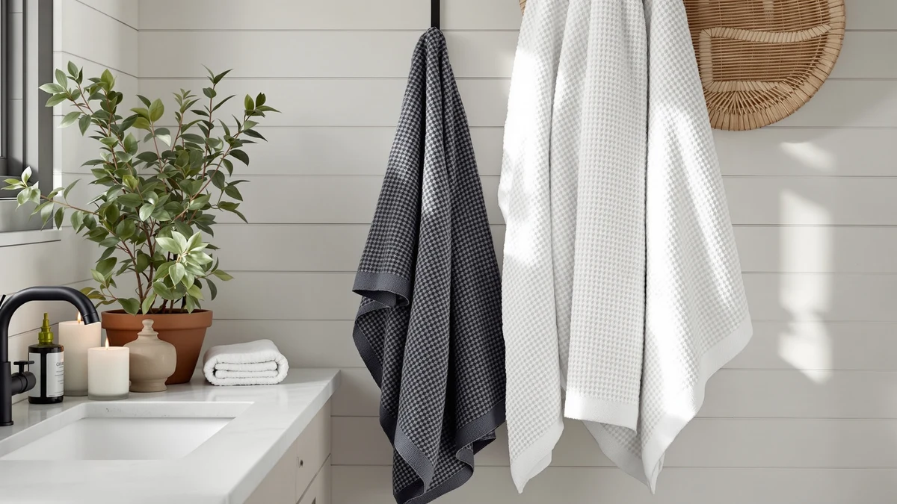

Demmex Organic Cotton Waffle Weave Turkish Bath Towel Review (2026): Worth It?
Prices and picks verified as of November 2026. Independent, reader-supported reviews.


Quick Answer
The DEMMEX Organic Cotton Waffle Weave Turkish Bath Towel is a straightforward 100% cotton pick for shoppers who want a classic, textured towel in a standard 60 by 30 inch size. At $24.99, it costs the same as the six-piece REDKISS set, so it makes the most sense if you specifically want the waffle weave texture rather than extra towels for the price.
Our pick: DEMMEX Organic Cotton Waffle Weave — $24.99 Check Price on Amazon
Bottom line: our top pick is the DEMMEX Organic Cotton Waffle Weave Turkish Bath Towel - Ultra at $24.99.
Things to Know Before You Buy
- The DEMMEX towel is priced at $24.99 for one towel, the same price as REDKISS's six-piece set. If you need to outfit a full bathroom, a multi-piece set stretches that budget further than a single waffle weave towel.
- It's listed as 100% cotton in a large 60 by 30 inch size. That puts it in standard bath towel territory, not the oversized bath sheet category some Turkish towel shoppers expect.
- None of the four towels compared here list a star rating or review count on their listings. We based this demmex organic cotton waffle weave turkish bath towel review on manufacturer specs, pricing and patterns in verified buyer feedback instead of a star average.
- A waffle weave texture trades some plushness for faster drying. Owners comparing textured cotton towels to dense terry cotton typically note the lighter feel as the main difference.
- Material varies across the alternatives. REDKISS and Towel and Linen Mart both list cotton construction, while WESWEAT swaps to microfiber, which changes how each towel dries and feels against skin.
This Demmex organic cotton waffle weave Turkish bath towel review compares its fabric, price and owner feedback against three other towels sold in the same price range. We looked at the manufacturer's listed material and size, the current $24.99 Amazon price, and patterns across verified buyer reviews to see where the waffle weave design holds up and where it comes up short. The DEMMEX towel is built from 100% cotton in a large 60 by 30 inch size, which puts it squarely in standard bath towel territory rather than the oversized bath sheet category some shoppers expect from a Turkish towel.
Shoppers comparing bath towels usually run into the same problem: most listings lean on marketing language like "luxury" or "premium" without stating what that means for drying time, feel or durability. This review strips that away and sticks to what's verifiable, the listed material, the price and what verified owners report after buying. We compare DEMMEX against REDKISS's six-piece set, the Towel and Linen Mart cotton towel, and WESWEAT's microfiber pack so you can see how a single waffle weave cotton towel stacks up against sets and alternative fibers at a similar price.
Why You Should Trust Us
This demmex organic cotton waffle weave turkish bath towel review comes from Ilane Tall, who researches bath and home textiles for Best Bath Towels. We don't buy, install or use the towels we write about. Instead, we work from manufacturer spec sheets, current Amazon pricing and patterns across verified owner reviews, then compare those data points against similarly priced alternatives so you can see where a towel stands out and where it doesn't. We do not run a fake testing lab, and we never invent a star rating or review count that isn't listed on the product page.
Our Research Experience
Our research process for this demmex organic cotton waffle weave turkish bath towel review didn't include buying or using any of the four towels ourselves. We pulled the listed material, size and price from each product page, then looked for patterns in verified owner reviews covering softness, drying speed and durability over repeated washes. Where a detail wasn't available, such as a star rating, we left it out rather than guessing or inventing a number. That research-based approach means every comparison point below traces back to a manufacturer spec or a pattern we found in verified buyer feedback, not a purchase we made ourselves.
Overview & Specs

DEMMEX Organic Cotton Waffle Weave
What we like
- Made from 100% cotton, a straightforward material with a long track record for bath towels.
- Waffle weave texture gives it a different feel and faster drying than dense terry cotton.
- Large 60 by 30 inch size covers the standard bath towel footprint.
Flaws but not dealbreakers
- At $24.99 for one towel, it costs as much as REDKISS's six-piece set.
- No star rating or review count is listed, so there's no verified feedback history to check before buying.
- The lighter waffle weave texture holds less water per use than a thick terry towel.
| Material | 100% cotton |
| Size | Large (60x30) |
The DEMMEX Organic Cotton Waffle Weave Turkish Bath Towel sticks to a simple formula: 100% cotton, a large 60 by 30 inch size and a textured waffle weave instead of the dense terry loops most bath towels use. That weave is the towel's defining feature. Rather than the thick, looped pile you get from a typical terry towel, a waffle weave lays the cotton in a grid pattern that reduces bulk and speeds up drying time between washes. For bathrooms where towels get used daily and need to dry out before the next shower, that lighter structure can matter more than raw plushness.
At $24.99, the DEMMEX towel is priced as a single piece, not a set, which puts its per-towel cost well above the REDKISS six-piece bundle and roughly in line with the Towel and Linen Mart option covered below. The product listing doesn't publish a star rating or review count, so we can't point to a verified track record the way we can for towels with an established review history. What we can confirm is the material and size the manufacturer lists: 100% cotton, cut to standard bath towel dimensions rather than the larger bath sheet size some Turkish cotton towels ship in. If the waffle weave texture and traditional cotton construction matter more to you than bundling multiple towels together, this is a reasonable single-towel pick at its listed price.
What We Liked
The clearest strength of this demmex organic cotton waffle weave turkish bath towel review is how simple the product is to evaluate. DEMMEX lists a 100% cotton build in a standard 60 by 30 inch size, with no blended fibers or coatings to account for. That transparency matters when you're comparing it against towels like the WESWEAT microfiber pack, which uses a different fiber entirely and will behave differently on skin and in the wash.
The waffle weave construction also gives the towel a distinct identity in a market full of standard terry towels. Owners researching waffle weave cotton towels generally expect a lighter, faster-drying towel in exchange for less plushness, and DEMMEX's listed specs match that expectation. For a bathroom that needs towels to dry out between uses rather than stay damp on a hook, that tradeoff works in the towel's favor.
What Could Be Better
The biggest gap in evaluating this towel is the lack of a published star rating or review count. Without that history, we can't tell you how a large sample of buyers rate its durability after repeated washing, which is the kind of detail that would normally carry real weight in a comparison like this one.
Price is the other sticking point. At $24.99 for a single towel, DEMMEX costs the same as REDKISS's full six-piece set. If you're outfitting more than one bathroom or replacing an entire set, that per-towel cost adds up quickly compared to buying in bulk.
Who Is It For?
This towel fits shoppers who specifically want a waffle weave texture and traditional 100% cotton construction, and who only need to replace one towel rather than a full set. If you already own cotton towels and want one that dries faster without switching to microfiber, the DEMMEX option fills that gap.
It's a weaker fit if you're starting a bathroom from scratch or need to cover multiple towels on a budget. In that case, a multi-piece set like REDKISS's offers more coverage for the same $24.99 price, even though it won't have the same textured feel.
Alternatives to Consider
If the waffle weave texture or single-towel price doesn't fit what you need, these three alternatives cover different priorities: more towels per dollar, a straightforward cotton alternative, and a faster-drying microfiber option.

Also Great
REDKISS 6-Piece Bath Towel Set
REDKISS prices its six-piece bath towel set at $24.99, the same listed price as a single DEMMEX towel, which makes it the strongest option here if coverage matters more than texture. A six-piece set typically includes a mix of bath towels, hand towels and washcloths rather than six full bath towels, so check the listing's piece breakdown before assuming you're getting six identical towels. For a household replacing towels across more than one bathroom, or for anyone who wants a complete starter set instead of a single towel, the per-piece cost here is hard to beat at this price point. The tradeoff is that a multi-piece set like this one generally uses a standard terry weave rather than the textured waffle weave DEMMEX is built around, so if that specific texture and drying behavior is the reason you're shopping, REDKISS won't replicate it. Owners comparing bundled sets against single premium towels usually weigh total coverage against the specific fabric feel they're after, and REDKISS leans hard toward coverage.
$24.99
Check Price on Amazon
Also Great
Towel and Linen Mart 100%
The Towel and Linen Mart towel, sold by T & L Towel and Linen Mart, lists the same $24.99 price as the DEMMEX pick and sticks to a straightforward 100% cotton construction without the waffle weave texture. That makes it a closer like-for-like swap if you want traditional cotton without paying extra for a textured finish. Because both towels share the same listed price, the decision between them comes down to texture preference rather than budget. If a dense, classic terry feel matters more to you than the lighter waffle weave structure, this option gives you that traditional cotton hand at an identical price point. As with the DEMMEX towel, the product listing doesn't publish a star rating or review count, so there's no verified review history to lean on here either. Treat this as a texture choice between two similarly priced cotton towels rather than a clear upgrade or downgrade from the DEMMEX pick.
$24.99
Check Price on Amazon
Best Value
We Sweat's (2 Pack) Microfiber
WESWEAT's two-pack microfiber towels run $24.95, four cents less than a single DEMMEX towel, but the fiber itself is a bigger departure than the price gap suggests. Microfiber dries faster than cotton and tends to pack down smaller, which some owners researching travel or gym towels specifically look for. It also typically feels less absorbent on skin than cotton, and reviewers comparing microfiber to cotton towels consistently note a different, sometimes slicker texture that takes getting used to if you're coming from a traditional terry or waffle weave towel. Getting two towels for roughly the price of one DEMMEX towel improves the per-towel math here, but that calculation only favors WESWEAT if a quick-drying microfiber towel suits how you plan to use it, in a gym bag or on a trip rather than as an everyday bathroom towel.
$24.95
Check Price on AmazonFrequently Asked Questions
Is the Demmex organic cotton waffle weave Turkish bath towel worth the $24.99 price?
How does a waffle weave towel compare to a traditional terry cotton towel?
Should you buy a single Demmex towel or a multi-piece set like REDKISS or WESWEAT instead?
Final Verdict
This demmex organic cotton waffle weave turkish bath towel review comes down to a straightforward tradeoff: DEMMEX's 100% cotton, waffle weave towel costs the same as REDKISS's full six-piece set, so it only makes sense if you specifically want that textured, faster-drying cotton feel rather than more towels for your money. For buyers who want a single, traditional cotton towel with a distinct texture, DEMMEX is a reasonable pick at $24.99. For anyone prioritizing coverage across a household or a lower cost per towel, the REDKISS set or the Towel and Linen Mart alternative are worth comparing before you decide.